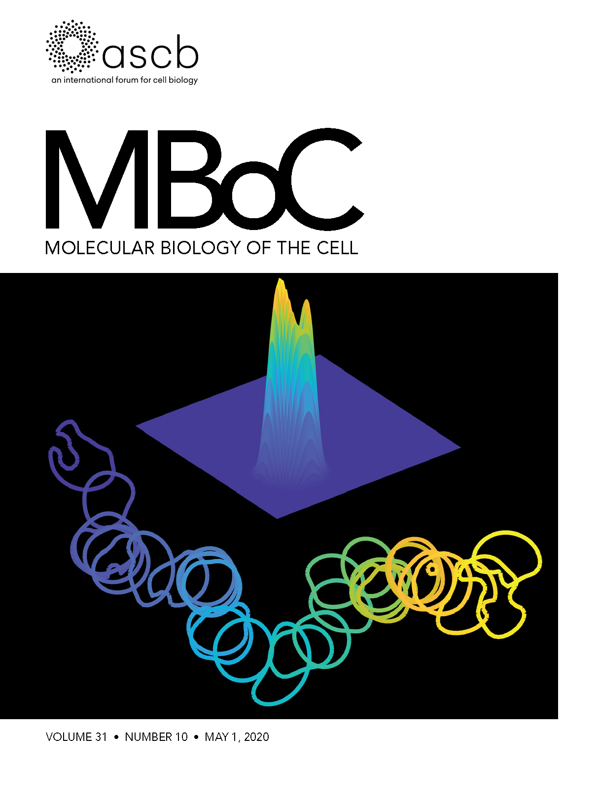

Hi!
I am broadly interested in how biological structures self-organize and perform computations. More specifically, I am developing a research program to understand and control the collective behavior of human immune cells. By doing so, I hope to build programmable biological robots that fight intruders like infections or tumors. I started this work in Don Ingber's lab at Harvard University (Ghose et al, 2025) and am now continuing it in Wendell Lim's lab at University of California, San Francisco.
Previously, I got my PhD from Daniel Lew's lab at Duke University where I studied how eukaryotic cells respond to chemical gradients. To uncover gradient sensing mechanisms, I combined yeast genetics, quantitative live cell imaging, and mathematical modeling. My colleagues and I mechanistically described dynamics of a cell's polarized front, discovered that the polarized front can perform chemotaxis up chemical gradients, and theoretically predicted mechanisms underlying chemotactic bias (Ghose & Lew, 2020, Ghose et al, 2021).
Outside the lab, I enjoy painting, playing guitar, and riding single-wheeled things.
Publications
Ghose D, Ferrante T & Ingber D. Cytokines control the physical state of immune tissue. bioRxiv. 2025. [Link]
Ghose D, Nolen J, Guan K, Elston TC & Lew DJ. Ratiometric signaling produces robust temporal integration for accurate cellular gradient sensing. bioRxiv. 2026. [Link]
Ghose D, Elston T & Lew DJ. Orientation of Cell Polarity by Chemical Gradients. Annual Review of Biophysics. 2022. [Link]
Ghose D, Jacobs K, Ramirez S, Elston T & Lew DJ. Chemotactic movement of a polarity site enables yeast cells to find their mates. Proceedings of the National Academy of Sciences. 2021. [Download/Link]
Clark-Cotton MR, Henderson N, Pablo M, Ghose D, Elston T & Lew DJ. Exploratory polarization facilitates mating partner selection in Saccharomyces cerevisiae. Molecular Biology of the Cell. 2021. [Link]

Ghose D & Lew DJ. Mechanistic insights into actin-driven polarity site movement in yeast. Molecular Biology of the Cell. 2020. (Chosen to be a Highlight and nominated for Best Paper of the Year) [Download/Cover/Link]
Henderson NT, Pablo M, Ghose D, Clark-Cotton MR, Zyla TR, Nolen J, Elston TC & Lew DJ. Ratiometric GPCR signaling enables directional sensing in yeast. PLoS biology. 2019. [Download/Link]